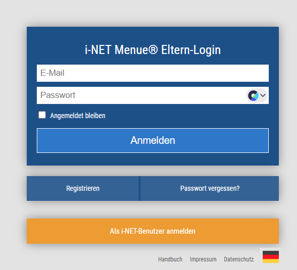
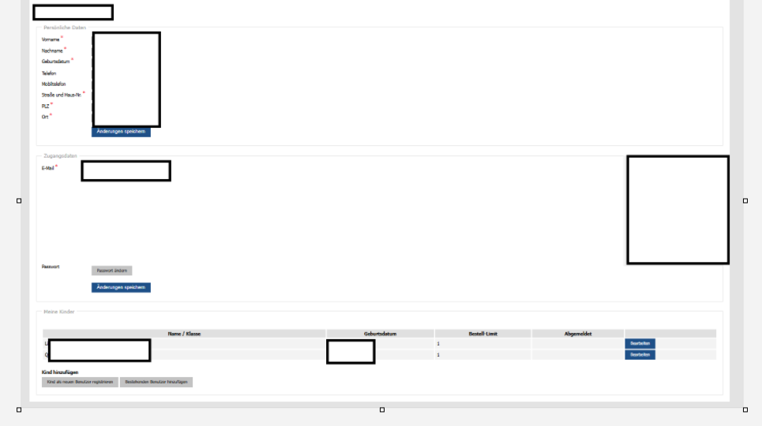
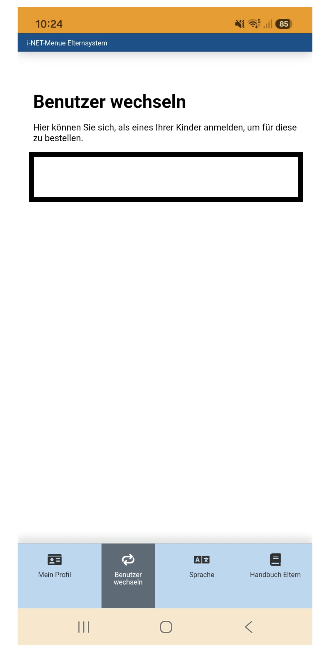

Ein Smartphone oder Computer reicht aus. Beide Kinder werden mit demselben Elternzugang verbunden.
Im Elternzugang anmelden
Öffnen Sie eltern.inetmenue.de. Melden Sie sich an oder wählen Sie „Registrieren“.

Eltern-ID anzeigen
Öffnen Sie Ihr Profil. Klicken Sie unten bei „Meine Kinder“ auf „Bestehenden Benutzer hinzufügen“. Jetzt sehen Sie Ihre Eltern-ID.

Erstes Kind verbinden
Melden Sie sich mit dem QR-Code oder den Zugangsdaten des ersten Kindes an. Öffnen Sie „Mein Profil“ → „Account mit Elternzugang verknüpfen“. Eltern-ID eingeben, prüfen und verknüpfen.
Zweites Kind hinzufügen
Wiederholen Sie Schritt 3 mit dem zweiten Kinderkonto. Danach können Sie in der App über „Benutzer wechseln“ zwischen beiden Kindern auswählen.

Abwesenheit für ein Kind eintragen
Wählen Sie zuerst in der App über „Benutzer wechseln“ das betreffende Kind aus. Öffnen Sie anschließend „Mein Profil“ → „Abwesenheit“. Dort können Sie die Abwesenheit erfassen. Die Funktion finden Sie jetzt im Profil und nicht mehr unter „Bestellungen“.
Wichtig: Die beiden QR-Codes gehören zu den getrennten Kinderkonten. Sie bedeuten nicht, dass zwei Geräte benötigt werden.